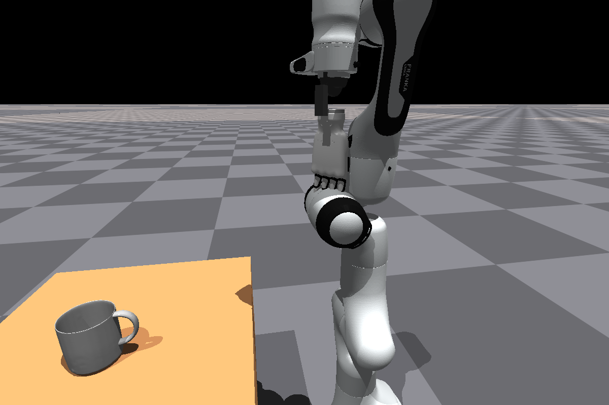
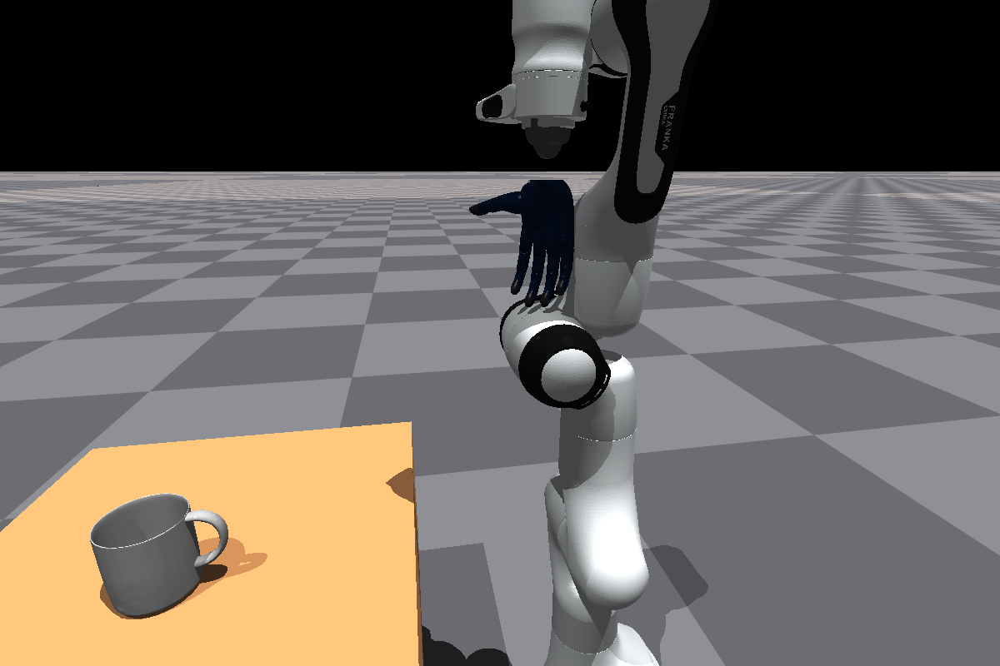
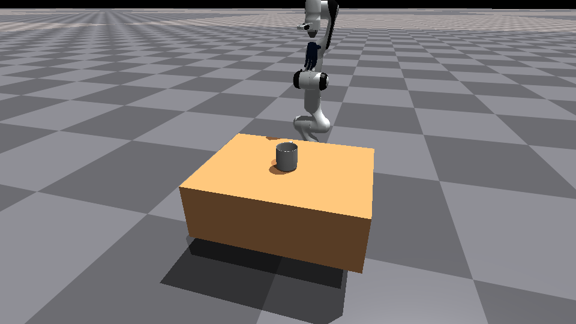

Intercept dynamic objects, close a dexterous hand around the graspable region, lift or catch, and hold stably.
SimToolReal extension / dynamic object settings
Dynamic dexterous grasping for sim2real research.
This page tracks the current Dynamic Gym branch: task design, robot embodiments, affordance labels, teacher-student training, falling-object catch settings, and visual evidence from training runs.
Legacy Sharpa, Franka + Inspire, and Franka + BrainCo Revo2 are kept as separate config lines.
Train privileged teachers first, then distill to RGB-D temporal point-cloud students with point-flow and affordance heads.
Background
From object-centric tool use to dynamic object grasping.
The original SimToolReal project learns object-centric policies for dexterous tool manipulation. This fork turns that foundation into a dynamic tabletop grasping track: objects move across a larger table, the policy must approach safely, make useful finger contact, and transition into a lift-and-hold behavior.
The project is still a simulation research stack, not a finished real-robot deployment. The most useful result so far is the set of ablations that separate reward design, observation realism, object diversity, and embodiment changes.
Task settings
Four final task goals cover aerial and tabletop dynamics.
Method
Current system layout
Observations
Teacher and student are intentionally separated.
Privileged point cloud policy
Uses simulator-side object information and clean object surface points. This branch is the upper-bound policy for reward and embodiment debugging.
- Robot joint state and previous action
- Palm state and fingertip positions relative to palm
- Privileged object point cloud relative to palm
- Object velocity, clean-v2 affordance, and task-specific catch signals
Deployable RGB-D temporal policy
Uses render-style RGB-D plus an object mask to build partial object point clouds. The branch is designed for sim2real, but still needs stronger training and validation.
- 8-frame temporal point cloud fusion
- Centroid velocity proxy and tracking confidence
- Point-flow and object-local affordance prediction heads
- No direct simulator object pose in the deployable actor
- Teacher-student distillation under active development
Affordance labels
Clean-v2 grasp priors from SAM3 multi-view annotations.
Embodiments
Robot assets are now versioned as experiment choices.



Experiments
Version map
Visual evidence
Training and preview clips
Current diagnosis
What is still blocking the desired behavior?
Living page
How to keep this page current
Add new experiment summaries, W&B links, and media cards in
docs/project_page/project_data.js. Drop new images or
mp4 files into docs/project_page/assets/, then reference
them from the data file.